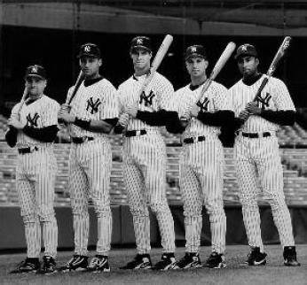
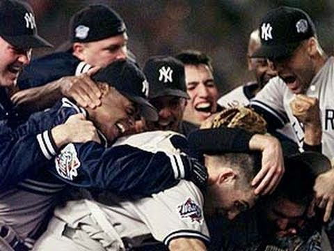

After the baby was born and ensured a Yankees win of game 1, they rallied in the 7th inning and procceeded to win. There was still 3 games remaining before they would be crowned as World Champions but they believed in the Yankee baby's words. The yankees just had to hold up their end of the bargain.

As the following 3 games approached the Yankees Players felt very positive in the results of the series considering the Yankee baby guaranteed a game 1 win and that is what happened. They came out red hot in the following 3 games and won the World Series. The Baby was assigned personal seats along with his parents in the Yankee dugout during these games as a good luck charm, and indeed he was. Before every inning the players would all rub his head and swore this baby had some sort of powers because it always worked.
Box Score of 1998 World Series
